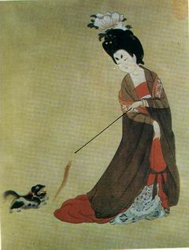
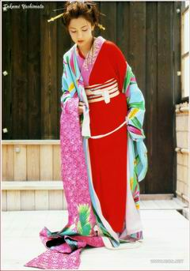

此刻的书房在空调的作用下温暖如春，剪去长长的假指甲后手指仿如卸下沉重死板的盔甲般轻松自如。妞妞趴在窗台上静静地观察窗外漫天起舞的雪花，在不受外界干扰的状况下我的心里既空旷又安逸，安逸到满足，这空旷足以装得下整个自然世界，装得下日复一日年复一年没太大变化的日子。
中午时分看了两个电视节目，觉得很有意思，一是海南旅游频道的《闺中密友》，这期三个女人讲到“梦中情人”的话题，其中一个女子的梦中情人是“黄药师”。其细数理由如下：
一、多金。光是一座桃花岛，就足以让其步入有产阶级；
二、有权。黄药师虽然不过问江湖之事，但黄蓉行走在外，危难之时，只要打出她爹的旗号，就像“芬必得”一样，药到痛止。按《格调》里对阶级的划分，这就应该属于“看不见的上层社会”。钱权皆备的人，比光有钱的人难得一点，但也算不得极品男人；
三、有智商才华。他通晓天文地理，擅长琴棋书画，又精于奇门五行之术，能够按照诸葛亮当年《八阵图》的遗法种植花木，智商之高，不在盖茨之下；
四、英俊有风度。女相一般肖父，由黄蓉可知她爹也不会差到哪儿。身材好，在物质不匮乏的条件下，瘦是理性和克制的体现；
五、专情。黄蓉的妈妈去世多年，他没续弦，也不和其他女人厮混，把对妻子的一腔关爱之情，全部倾注到女儿身上，就凭这一点，也能使无数女人热泪盈眶。
要说黄药师有缺点，就是做事有点偏激。考虑到这是一个“只有偏执狂才能生存”的世界，似乎也算不得什么。偏执的男人在情爱方面也很顽固，如果他爱过一个女人，就会难以自拔，陷在回忆里，永远不出来。如果他没有爱过人，那么，一定会在以上中塑造一个“神仙姐姐”似的完美女人形象，若非与设想的完全一样，就绝不苟同。
所以说，女人如果不像王语嫣那样闭目羞花，比不上黄蓉那样冰雪聪明，又没有小龙女那样的高雅气质，就千万不要为了某个“黄药师”，等闲了红颜。因为梦中情人完全是停留在感觉层次上，现实生活中选择伴侣，只要他能满足你若干重要条件中的几条，就可完全接纳看作是自己100%的情人。节目中三女子说到：“其实和我们最终生活在一起的都不是梦中情人的那些标准下的男人。”男人也有梦中情人，但男人的梦中情人是建立在感官层次上的。
另一个节目是北京电视台的《城外城“日本的忙与闲》，日本恰好是今年旅游计划之一。一同事刚从日本出差回来，被问到日本今年流行什么款式的衣服，答曰：“宽松的大毛衣，领口的效果是前后反着的。”某天在饭馆吃饭，邻桌一女子背对他坐，毛衣后面的领口呈V字型，且开口大到半个背露在外面，总让人以为她是面朝后面坐着。而前面的领口则平行到锁骨。”
嘉宾谈到在日本的酒文化。日本人喝酒也和中国人一样“感情深一口闷”，大多数上班族晚上工作结束之后相约三两人去小酒馆饮酒，深夜街头常能见到摇摇晃晃酒醉后的男子。男人们借助酒精来放松一下白天的工作压力，发泄对上司的不满情绪，第二日继续按部就班地工作。
中国古代的酒恐怕和清酒差不多。清酒，在日本一般叫“日本酒”，酒精度大约在13—15度，大多是纯米酿造，无色透明，越是好酒越带点儿微黄，好酒还有种粘稠的感觉，种类极多，象中国各地都有自己的白酒一样，日本酒也有各种地产酒，价格差距也极大，好的上万日元/瓶，差的不到1000日元可以买一大盒(1.8L)。
在酒馆里要清酒，普通论“合”，300ml/合？(记不清了)。饮酒的方法也多，一般根据酒的种类，分高温、温、室温、冷，一般包装上都有注明，甚至标明具体的温度，味道有辛、甘口之分。一般老年人喜欢饮热酒，酒用小瓷瓶装，一热，香味浓郁，酒气也容易散发出来，入口慢，不易醉；年轻的多喜饮冷酒，清冽甘爽，有种专门的冷酒具，玻璃制，中间有凹进去的洞，放冰块，酒倒进去不会掺水，又能保持低温，喝冷酒容易喝多，后劲大。当然跟季节也有关，冬天喝热酒的人当然多。
我对日本的樱花感兴趣。每年的春季，南京鸡鸣寺一带沉浸在弥漫的樱花气息里！白衣素裳，满树莹洁，落英如雪，在这樱花飞舞的季节里，阵阵春风拂过，让你感到花吹雪的情怀…… 这让我很向往在樱花盛开的季节去日本看一看樱花。在日本语中，“樱时”就是指樱花盛开的时节，也就是春天。日本政府把每年的3月15日至4月15日定为“樱花节”。在春天樱花盛开的时候，人们带上亲属，邀上友人，携酒带肴在樱花树下席地而坐，一边畅饮，一边陶醉在漫天飞舞的“花吹雪（はなふぶき）”中，是日本人民一年里最心仪的事情。
樱花在日本的历史悠久，已有1000多年的历史。在奈良时代（710—794年）,说到花,就是指梅花，到了平安时代（794—1192年），樱花成了主角，咏樱花的歌比咏梅花的歌要多5倍。而且日本很早就有了赏樱花的活动。7世纪,持统天皇特别喜爱樱花，多次到奈良的吉野山观赏樱花。另外,据说日本历史上的第一次赏樱大会是9世纪嵯峨天皇主持举行的。当初，赏樱只是在权贵间盛行，到江户时代（1603—1867年）才普及到平民百姓中，形成传统的民间风俗。
另外一个不得不注意到的就是日本和服。目前正在央视热播的《汉武大帝》里不少汉朝女性的脸被涂成白色、画上小红嘴和细黑眉，酷似日本艺妓的妆。导演胡玫曾表示，日本的服饰妆容是我国汉代时流传过去的，为还原汉代女子的模样特意借鉴“日本元素”。唐装传入日本之前，背后是个蝴蝶结，日本妇女嫌麻烦改成了枕头。现在某些媒体鼓吹的“唐装”并不是这里谈到的唐装，上海APEC会议上衣服的简直是对汉服唐装的侮辱。试着在互联网上搜索一下“日本和服”及“唐朝服装”，你可以发现和服的连接站点大大多于唐装站点。唐装是中国人的瑰宝，不应该放弃，要让全世界的人都知道这么美丽的服饰是来自华夏民族，中国古代就有这么华丽的服饰了！


左图：唐朝女性流行服装
右图：日本和服
No Responses to “无题”
Leave A Reply
存档只读，评论已关闭。